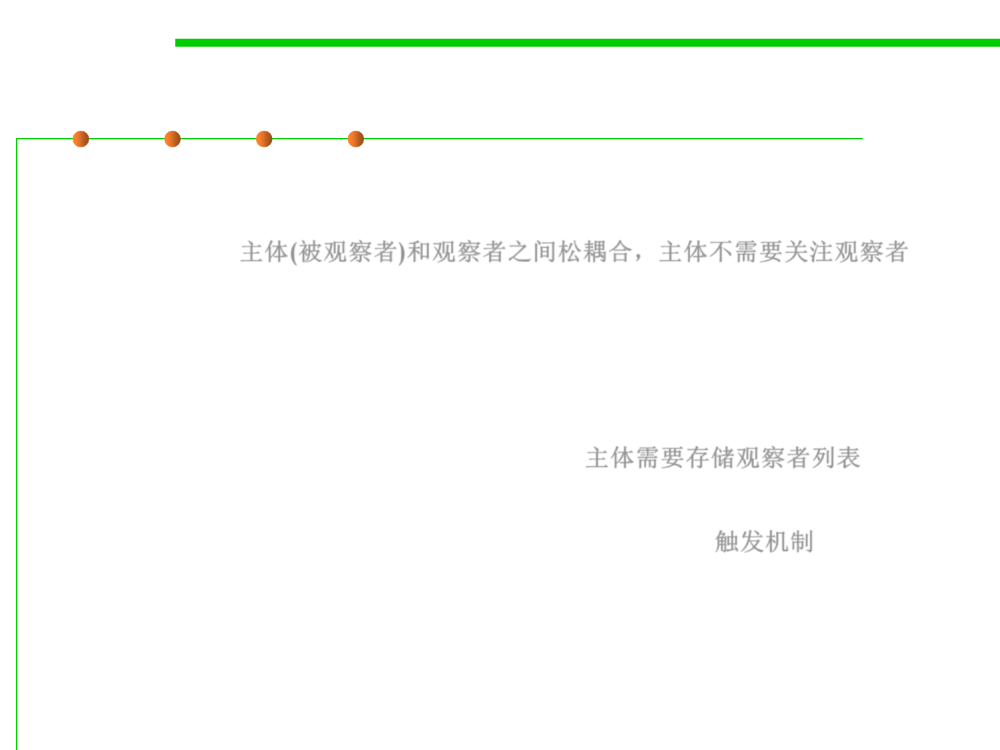

Observer Pattern
6.2 Design Patterns for Maintainability
▪ Advantage:
– Low coupling between subject and observers: Subject unaware of
dependents 主体(被观察者)和观察者之间松耦合，主体不需要关注观察者
– Support for broadcasting: Dynamic addition and removal of observers
– Unexpected updates: No control by the subject on computations by
observers
▪ Implementation issues
– Storing list of observers: typically in subject 主体需要存储观察者列表
– Observing multiple subjects: typically add parameters to update()
– Who triggers update: state-setting operations of subject 触发机制